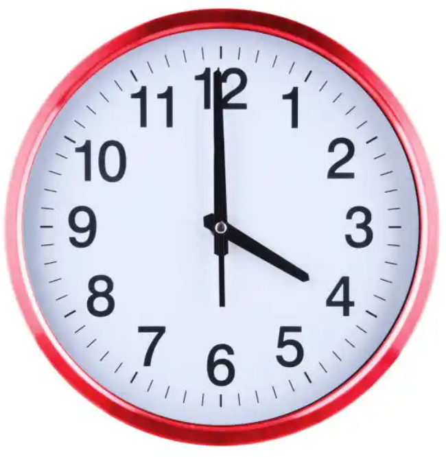

|  |
MENDIE JONATHANAm a new web developer still just learning html and so far it's been pretty interestingAnd I hope it continues to be so. Contact Me |
I finished school in the year 2017 for some time everything was going well or so I tought, little did i know that although things seemed fine then i was lacking one thing that was very very essential and will eventually come to bite me back in the ass and that was a GOAL
GOAL what is a goal, A goal 2 me at that time was a destination or probably a focus. I at that time was everywhere but yet nowhere it might sound strange to u but the me now figured out that I was extremely busy but yet idle crazy right
Anyway let not loose sight of the matter at hand back to the main topic and bla bla bla bla crazy shit happened, I lost everything went back to square 1 extremely broke and didn't know where to pick myself up from or what to even do about school, I just kept on moving and drifting away from the right path and drowning myself by reading mangas all day long.
fotunately i was extremely lucky that i had people around me who wouldn't give up on me and kept pushing me telling me that i can do better, and i can be better I just needed to find a focus, pick mysely up and get back on track and the most amazing part was that not only did he advice me but he also helped lift me up and showed me a new starting point.
This were all the factor to be consider to get my lift back on track, It wasn't easy to get my shit together by I wouldn't say it was hard either considering the trill I felt knowing that i am finally getting my life back together.
All thanks to those who truly had me at heart ❤ i was given two advice and they are as followed
I was adviced to go back to school, but well as u might have guessed there were many problems.
So as a solution to this my only option was to consider Online schooling and that was how i found out about Noun, noun is an online school that you can easily register into as long as you have a really good GCE result.
Presently this is the first and only html i've written although I think just by looking at it, it's pretty obvious but anyway I will let u be the judge of that 😉. And that was pretty much how I started web development.
| HOBBIES | RATING | HOBBIES | RATING |
|---|---|---|---|
| Art & Craft | 🌟🌟🌟🌟🌟 | Singing | 🌟🌟🌟 |
| Exercise | 🌟🌟🌟 | Origami | 🌟🌟🌟 |
| Watching Movies | 🌟🌟🌟🌟🌟 | Drawing | 🌟🌟🌟🌟 |
| Leather Craft | 🌟🌟🌟 | Gaming | 🌟🌟🌟 |